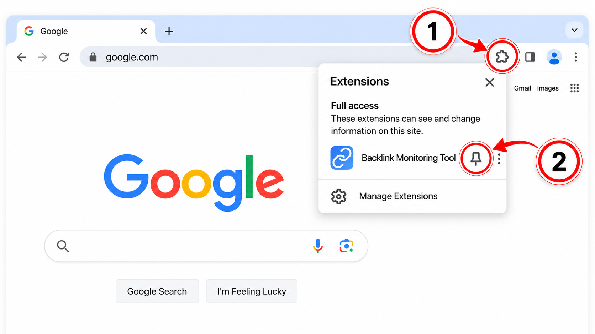
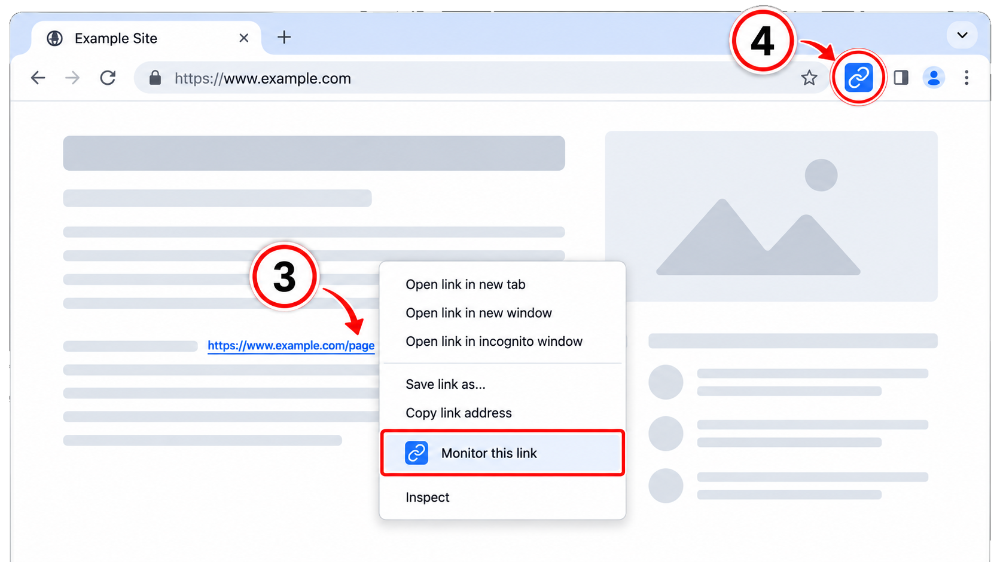

Backlink Monitoring Tool Installed
Click the puzzle piece (1) in Chrome's toolbar. Then click the pin (2) next to Backlink Monitoring Tool.

Right-click any link and choose “Monitor this link” (3) to add it to monitoring. Then click the Backlink Monitoring Tool icon (4) in Chrome's toolbar to view and manage your monitored links.
